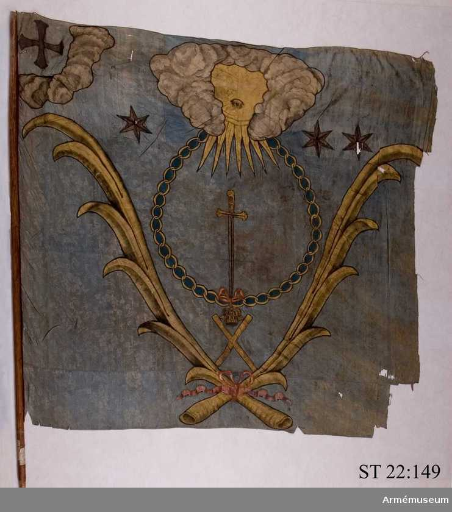
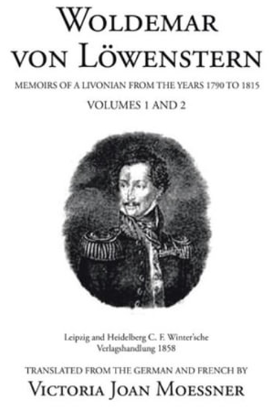
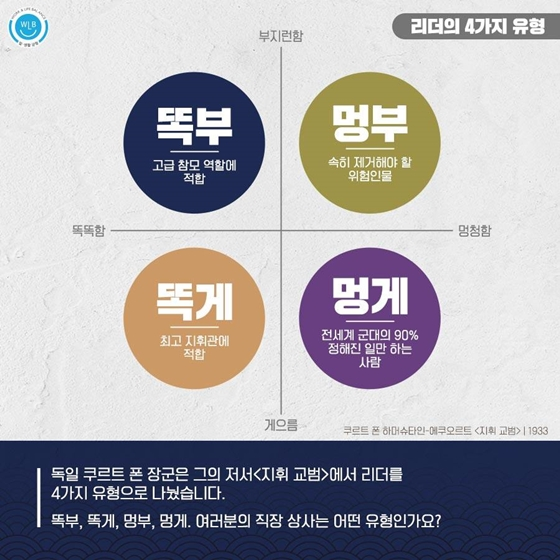
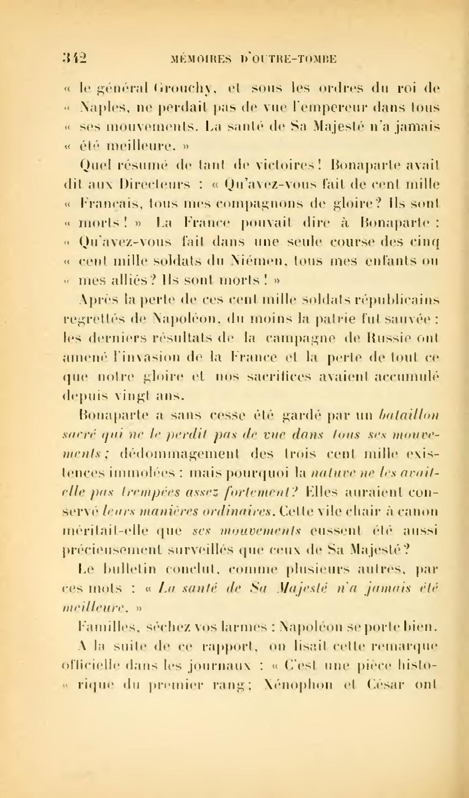

러시아군의 사정 - '똑게' 쿠투조프
게시: 2021-11-15T06:30:34+09:00
나폴레옹은 강추위에 무너져 내리는 자신의 군대를 보며 무척이나 화를 냈습니다. 그는 나름 잘 싸웠던 빅토르에게도 '형편없는 소극적 태도로 아무 것도 하지 않았다'라며 화를 냈고 자신이 무관심과 혹사로 기병대를 날려먹어 놓고서는 폴란드인들에게 '폴란드에도 코삭 기병이 있던데 왜 그들을 대규모로 미리 준비해놓지 않았는가'라며 화를 냈습니다. 당연히 자신을 배신하고 혼자서 도망친 슈바르첸베르크 대공과 그가 지휘하는 오스트리아군, 그리고 강추위에 대해서도 화를 냈습니다. 보통 남탓 하기를 좋아하는 사람이 원하는 바는 '그러니까 내 잘못은 아니야'라고 강조하는 것인데, 이 점에 있어서 쿠투조프는 나폴레옹급의 인성을 보여주었습니다. 일부러 저런다는 티가 날 정도로 천천히, 정말 천천히 추격해오느라 나폴레옹의 뒤꿈치도 보지 못한 그는 베레지나에서 나폴레옹이 빠져나갔다는 소식을 접하고는 아주 기다렸다는 듯이 화를 냈습니다. 그는 허접한 기만 전술에 속아너어간 치차고프 제독의 멍청함에 대해 '믿을 수 없다' '도저히 용서가 안된다'라며 길길이 뛰며 비난했습니다. 스투지엔카에서 프랑스군이 도강 준비를 하고 있는 것을 보고도 치차고프의 명에 따라 남쪽으로 이동했던 차플리츠 장군에 대해서는 '바보같은 암소'라며 욕을 했습니다. 베레지나를 미리 건너가서 서쪽 강변에서 나폴레옹의 도주를 막으라는 명령을 거부하고 동쪽 강변에 포진했던 비트겐슈타인에 대해서는 치차고프보다 훨씬 더 심한 힐난을 퍼부어댔습니다. 그러나 나폴레옹이 빠져나간 것에 대한 책임을 이렇게 부하들에게 다 돌려버린 쿠투조프는 여태까지 길길이 뛰던 것과는 반대로, 정작 나폴레옹에 대한 추격에는 별로 열의를 보이지 않았습니다. 나폴레옹은 베레지나를 건너는데 정말 드라마를 쓰며 건너야 했지만, 쿠투조프는 그럴 필요가 없었습니다. 나폴레옹이 베레지나를 건너자마자 사람 약을 올리듯이 뒤늦게 찾아온 강추위에 베레지나가 꽁꽁 얼어붙었거든요. 쿠투조프의 군대는 나폴레옹이 불태우고 간 임시 교량의 잔해를 기반으로 다시 다리를 놓을 필요조차 없었습니다. 그러나 러시아군의 추격에는 열의가 없었습니다. 일단 쿠투조프가 저렇게 남탓만 하고 퍼질러 앉았으니 부하들도 서로를 비난하기에 바빴습니다. 치체린(Aleksandr Chicherin) 중위의 12월 1일자 일지에는 '음모론이 온 부대에 만연한다'라고 적었습니다. 5개월 전 개전 초기부터 러시아군에는 '독일인 등 외국인 장군들이 러시아를 나폴레옹에게 통째로 넘기기 위해 음모를 꾸미고 있다'는 불신의 헛소문이 횡행했는데, 나폴레옹이 초라하게 패퇴하는 지금까지도 '나폴레옹이 무사히 빠져나간 것은 러시아군 내부에 배신자가 있기 때문'이라는 믿음이 팽배했습니다. 장군들이 저 모양인데 우리가 발바닥이 벗겨지도록 나폴레옹의 뒤를 쫓아가봐야 아무 소용 없다는 것이었지요. 그런데 실제로 러시아군의 추격은 그야말로 고난의 행군이었습니다. 러시아인들이 아무리 추운 날씨에 익숙하다고 해도, 그들도 사람이었습니다. 당연히 프랑스인들이 추워하는 만큼 러시아인들도 추웠고, 앞서 가는 프랑스인들이 먹을 것을 구하지 못하는데 그 뒤를 따라가는 러시아군이 먹을 것을 구할 수 있을 리가 없었습니다. 그리고 그 결과는 프랑스군 못지 않게 참혹했습니다. 러시아군의 대략 2/3가 전열에서 이탈했습니다. 상당수가 동상으로 쓰러져 죽거나 낙오되었고 식량 부족으로 인한 탈영도 계속 이어졌습니다. 쿠투조프의 본대는 타루티노(Tarutino)에서 출발할 때 97,112명의 병력에 622문의 강력한 포병대를 거느렸는데, 여태까지 보셨듯이 매우 천천히 행군했고 별다른 전투가 없었음에도, 나중에 빌나에 도착했을 때는 27,464명에 대포 200문으로 줄어 있었습니다. 이것이 쿠투조프 본인의 보고서에 올라온 숫자였으니 실제로는 비전투 손실 규모는 더 컸을 수도 있습니다. 러시아 육군에서 가장 유서 깊은 2개 연대 중 하나인 세미오노프스키 근위대(Семёновский лейб-гвардии полк, Semyonovsky leyb-gvardii polk)조차도 중대당 생존자가 50명에 불과할 정도였습니다. 전쟁이 시작될 때 이 근위 연대에는 3개 대대에 51명의 장교와 2,147명의 사병이 있었다고 하니까, 대략 중대당 180명 정도 있었던 것 같습니다.

(1700년 러시아의 숙적인 스웨덴군과 싸우다 스웨덴에게 탈취당한 세미오노프스키 근위대의 중대 깃발입니다. 저 왼쪽 윗부분의 십자 표시가 세모오노프스키 근위 연대의 표식입니다.) 러시아군의 말들도 그랑다르메의 말들과 똑같이 죽을 고생을 했습니다. 발트해 연안의 독일 가문 출신 기병 장교였던 로벤슈테른(Woldemar von Lowenstern)에 따르면 당시 기병대의 말들은 모두 지독한 안장 부종(saddle sore)을 앓고 있어서 기병대가 지나가면 멀리서도 그 악취가 날 정도였다고 합니다. 역시 로벤슈테른의 회고록에 따르면 고통 감내에 익숙한 러시아 병사들마저도 이 추위에는 견디지를 못했습니다. 이들은 어쩌다 따뜻한 움막이나 집을 발견하면 장교들이 아무리 협박을 해도 거기 들어가서 나오려하질 않았고 화상을 입더라도 난로를 끌어안다시피 했습니다. 독투로프(Dokhturov) 장군도 12월 4일자 아내에게 보내는 편지에서 '우리 군대는 완전히 엉망이 되었으며 당장 휴양을 취하며 보충병을 받아야 한다'라고 썼습니다. 베레지나에서 퇴각하는 그랑다르메의 뒤를 가장 바싹 따라붙은 러시아군의 선봉은 역시 치차고프의 군대였는데, 그 중 사단 하나를 지휘하던 프랑스 출신 망명 귀족 랑게론(Langeron) 장군에 따르면 베레지나에서 출발할 때 2만5천이던 치차고프의 병력은 결국 네만 강까지 갔을 때는 1만 정도만 남아 있었습니다.

(로벤슈테른은 에스토니아의 독일계 귀족 출신으로서 원래 기병대에 있다가 군문을 떠나 결혼을 했으나 와이프가 병에 걸려 그 치료를 위해 비엔나에 거주하고 있었습니다. 그러나 나폴레옹이 비엔나를 침공할 때 와이프가 사망했으므로 그는 나폴레옹에게 개인적인 원한이 꽤 깊었을 것입니다. 그는 러시아군의 일원으로 결국 파리까지 갔는데, 그의 회고록은 전투 이야기보다는 전쟁 당시 만난 다양한 사람들의 모습들과 그들의 생활 환경에 대해 잘 묘사하여 나름 가치가 있다고 합니다.) 어떻게 생각하면 이건 매우 바보같은 상황으로 보일 수도 있습니다. 어차피 강추위와 굶주림으로 속절없이 녹아내리던 그랑다르메를 이렇게 큰 희생을 치르며 굳이 추격할 필요가 있었을까요? 공연히 체면을 차린답시고 추격에 나섰다가 애꿎은 병사들 수만명의 목숨을 잃게 했으니 말입니다. 그러나 쿠투조프는 추격을 명했습니다. 그리고 그것이 죽어가던 그랑다르메의 숨통을 끊었을 뿐만 아니라 결국 관 뚜껑에 못까지 박았습니다. 이렇게 뒤에서 러시아군이 맹렬히 추격해오고 있다는 것을 알았기 때문에 그랑다르메는 패전 때마다 결국 재집결하여 반격에 나섰던 과거처럼 재집결할 틈을 얻지 못했습니다. 이들은 속절없이 빌나까지 계속 후퇴해야 했습니다. 이미 언급했듯이, 이 즈음 나폴레옹은 그랑다르메에게 충분한 식량과 10일 간의 휴식만 주면 재편성을 거쳐 충분히 빌나를 지켜낼 수 있다고 부하들에게 주절댔지만, 동시에 '그러나 우리에게 10일 간의 시간이 주어질 것 같지가 않다'라는 소리를 함께 했습니다. 러시아군이 바싹 뒤를 쫓아오기 때문이었습니다. 이렇게 나폴레옹의 아픈 점을 쿠투조프는 너무나 잘 알고 그런 부분만 골라서 쿡쿡 쑤셔댔으니, 어떻게 보면 쿠투조프는 정말 아무 생각없는 뚱땡이 노친네처럼 보이다가도 진짜 뛰어난 '똑똑하고 게으른' 지휘관처럼 보이기도 합니다. 다만 보통 '똑게'형 보스 밑의 부하들이 편한 법인데 쿠투조프식의 '똑게'는 보스 자신만 편할 뿐 부하들은 죽을 맛이었고 실제로 많이들 죽어야 했습니다.

(이거 참, 뭐라고 할 말이 없네요. 여러분 중에 나폴레옹을 멍부형 리더라고 감히 분류하실 분 계십니까? 그러나 모든 리더, 특히 군 지휘관은 실적으로 평가를 받아야 하는 법입니다.)
선수끼리는 상대를 알아보는 법입니다. 나폴레옹은 쿠투조프의 추격을 보고 빌나를 결국 지키지 못할 것이라는 것을 깨달았습니다. 그리고 빌나를 잃는다면 자신의 러시아 원정이 처절한 패배로 끝났다는 것을 유럽 세계에 감출 방법이 없다는 것도 잘 알고 있었습니다. 그는 12월 3일 말라제츠나(Maladzyechna)에서 제29회차 원정군 회보(Bulletin of the campaign) 내용을 구술했는데, 놀랍게도 그 안에서 '상황이 불리하여 후퇴'한다는 것을 공식적으로 발표했습니다. 이건 언제나 승리를 주장했던 나폴레옹으로서는 대단히 이례적인 일이었습니다. 하긴 나폴레옹이 이 정도 규모의 참패를 겪은 것은 평생 처음 있는 일이었지요. 다만 이 회보는 12월 16일 이후에 공표가 되도록 지시했는데 그때 즈음에는 나폴레옹 본인이 파리에 거의 도착했을 것으로 판단했기 때문이었습니다. 이 회보의 마지막은 '폐하의 건강은 더 할 수 없이 좋으시다' (La santé de Sa Majesté n'a jamais été meilleure)라고 끝났는데, 이는 혹시나 나폴레옹의 신변에 이상이 생겼다는 소문이 퍼질 경우 모반이 일어날 것을 염려한 나폴레옹이 모든 회보의 마지막에 꼭 넣게 했던 상투적인 문구였습니다. 그러나 이 거대한 원정이 이토록 참혹하게 끝난 마당에 매우 좋지 않은 맺음말이었고, 이는 훗날 역사가들에게 두고두고 씹히는 문구가 되었습니다.

(샤또브리앙의 회고록 'Mémoires d’outre-tombe'입니다. 무덤 너머의 회고록이라는 뜻입니다. 여기서 샤또브리앙은 '폐하의 건강은 더 할 수 없이 좋으니 기뻐하란 말이냐? 그토록 많은 가족들이 눈물을 흘리고 있는데?'라며 나폴레옹을 맹비난했습니다. ) 한편, 이런 난리 속에 나폴레옹은 마침내 군을 버리고 파리를 향해 먼저 떠날 결심을 굳혔습니다. 문제는 남은 군의 지휘권을 누구에게 넘기느냐 하는 것이었는데, 침몰하는 배에서 누가 선장을 하느냐가 중요할 것 같지 않지만 그런 속에서도 감투 싸움을 하는 사람들이 꼭 있게 마련이었습니다. Source : 1812 Napoleon's Fatal March on Moscow by Adam Zamoyski
https://fr.wikisource.org/wiki/Page:Chateaubriand_-_M%C3%A9moires_d%E2%80%99outre-tombe_t3.djvu/354 https://en.wikipedia.org/wiki/Semyonovsky_Life_Guards_Regiment https://www.booktopia.com.au/woldemar-von-lowenstern-victoria-joan-moessner/book/9781665502900.html
https://www.korea.kr/news/policyNewsView.do?newsId=148863536